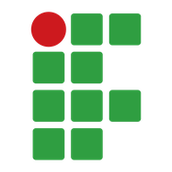

Ideias em movimento.
Futuro em construção.
Na AX Academy, tecnologia e aprendizado se encontram para transformar desafios em soluções inteligentes.
Uma tarefa repetitiva.
Um novo jeito de resolver.
A AX Academy conecta automação, dados e inteligência artificial. A jornada começa nas tarefas do dia a dia e avança até a construção de fluxos que integram ferramentas, sistemas e agentes.
Entenda o desafio
Observe o processo, reconheça etapas repetitivas e descubra onde a automação pode ajudar.
Dê forma à solução
Crie robôs com Python, explore dados e combine serviços para transformar uma ideia em um fluxo.
Conecte com a prática
Conheça aplicações na indústria e em suprimentos.
- Python
- Google Cloud
- Docker
- FastAPI
- TensorFlow
- MLflow
- n8n
- CrewAI
- LangGraph
- LangChain
Quatro módulos.
Um mundo de possibilidades.
Uma jornada que conecta ferramentas, dados e processos para criar soluções com propósito.
RPA com Python
Automatize tarefas, conecte sistemas e construa robôs com Python.
Data Science e Machine Learning
Explore dados, desenvolva modelos e acompanhe seu desempenho ao longo do tempo.
Hiperautomação
Combine processos, ferramentas e serviços para automatizar fluxos de ponta a ponta.
Agentes inteligentes
Conheça ferramentas para criar fluxos e sistemas com agentes inteligentes.
Conheça o que estamos construindo.
Explore projetos que aplicam automação e inteligência a desafios reais.
Apoiadores

IFAM